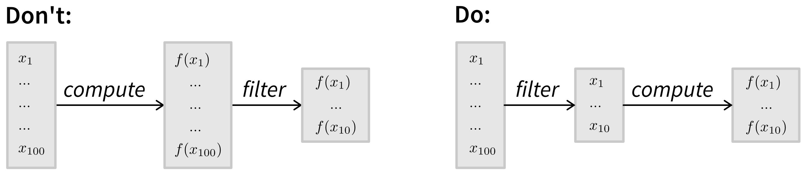

4 What We Code
Now that you know which results you want to create, are you itching to start programming? Hold on for a moment!
One of the most common missteps I’ve seen junior developers take is jumping straight into coding without first thinking through what they actually want to build. Imagine trying to construct a house by just laying bricks without consulting an architect first—halfway through you’d probably realize the walls don’t align, and you forgot the plumbing for the kitchen. You’d have to tear it down and start over! To avoid this fate for your software, it’s essential to make a plan and sketch out the final design first (Figure 4.1).
Your software design doesn’t have to be perfect—we don’t want to overengineer our solution, especially since many details only become clear once we start coding and see how users interact with the software. But the more thought you put into planning, the smoother and faster execution will be.
Unlike a house, where your design will be quite literally set in stone, code should be designed with flexibility in mind. While expanding a house to add extra rooms for a growing family—and then removing them again when downsizing for retirement—would be costly and difficult, this kind of adaptability is exactly what we strive for in software. Our goal is to create code that can evolve with changing requirements.
To make sure your designs will be worthy of implementation, this chapter also introduces key paradigms and best practices that will help you create clean, maintainable code that’s easy to extend and reuse in future projects.
Step by Step: From Output to Input
Once we know the outputs we want (e.g., result plots), the next step is identifying the sequence of instructions and the data required to generate them.
At its core, programming is about transforming inputs into outputs. To determine the process for obtaining the desired results, we can work backward to figure out what data we need to create them (Figure 4.2). This is especially important when generating data yourself, such as through simulations. For example, if you want to plot how values change over time, you’ll need to record variables at every time step—not just the final outcome of a simulation (duh!).
Breaking Down the Steps
Let’s map out the steps required to create the above scatter plot displaying actual values \(y\) (y), model predictions \(\hat{y}\) (y_pred), and the \(R^2\) value in the title to indicate the model’s goodness of fit:
To create the plot, we need \(R^2\),
y, andy_pred.plot_results(R2, y, y_pred)\(R^2\) can be computed from the values stored in
yandy_pred.R2 = compute_r2(y, y_pred)ycan be loaded from a file containing test data.y = ...y_predmust be estimated using our model, which requires:- The corresponding input values (
x1…x5) from the test data file. - A trained model that can make predictions.
X_test = ... y_pred = model.predict(X_test)- The corresponding input values (
To obtain a trained model, we need to:
- Create an instance of the model with the correct configuration.
- Load the training data.
- Train the model on the training data.
model = MyModel(config) X_train, y_train = ... model.fit(X_train, y_train)The model configuration needs to be provided by the user when running the script.
config = ...
Of course, in the actual implementation, each step will require further details (e.g., the formula for computing \(R^2\) or where the data is loaded from). But since we know that following this sequence in reverse order will produce the desired results, this provides us with the rough outline of our code (see Section 4.4 for how these steps could come together in the final script).
Some steps depend on others (e.g., you must fit your model before making predictions), but others can be performed in any order. Optimizing the sequence can improve performance and efficiency.
For example, if you’re baking bread, you wouldn’t preheat the oven hours before the dough has risen—that would waste energy. Similarly, when processing a large dataset, where you need to perform an expensive computation on each item but only a specific subset of these items is included in the final results, then it may be more efficient to filter the items first so you only compute values for the necessary items:

Define Intermediate Data Structures
When transforming input data into desired outputs, it’s often necessary to persist intermediate results. These results should be stored in a format that makes sense for both the process that produces them and the one that consumes them. For example:
- A user fills out a form on a website. Their information is stored in a database so it can later be retrieved and displayed on their account page.
- You run simulations that output data to CSV files. These files are then used to generate plots.
- You define model settings in a
config.ymlfile, which your script reads to initialize the model with the correct configuration.
It’s important to carefully design the structure of this intermediate data—what fields it includes, what they’re called, and how they’re organized. Because if you later need to change the format, you’ll have to update both the producer and consumer processes, and potentially migrate existing data.
To design an effective structure, start by identifying the fields required by the downstream process. Then consider whether other processes might use this data and if they might need additional fields. Don’t overengineer it—we’re not trying to future-proof against every possible scenario. But it’s worth considering whether to store data at a finer level of detail than what’s currently needed. It’s much easier to extract or summarize detailed data later than to reverse-engineer missing details from aggregate values.
If your code does more than generate plots—for example, if you’re running a simulation—you also need to plan your experiment runs. Ideally, your code should allow you to run the same script with different parameter configurations, making it easy to test different setups.
To determine all possible configuration variants for your experiments, consider:
- The models or algorithms you want to compare (your approach and relevant baselines).
- The hyperparameter settings you want to test for each model.
- The datasets or simulation environments on which you’ll evaluate your models.
- If your setup includes randomness (e.g., model initialization or simulation stochasticity), how many different random seeds you’ll use to estimate variability.
Think about the data each experiment run will generate and how you’ll process it later. For instance, you might need a separate script that loads data from multiple runs to create additional plots comparing the performance of multiple models. This is simplified by using a clear naming convention for all output files, such as:
{dataset}_{model}_{model_settings}_{seed}.csvIf your experiments will take several days, check whether you can run them on a compute cluster, submitting each experiment as a separate job to run in parallel.
Designing an Algorithm
Some problems require more creativity to come up with an efficient algorithm that produces the correct output from a given input. Take the traveling salesman problem, where the goal is to find the shortest possible route through a given set of cities. Designing an efficient solution often involves choosing the right data structures (e.g., representing cities as nodes in a graph), using heuristics, and breaking the problem down into simpler subproblems (divide & conquer strategy). If you’re working on a novel problem, studying algorithm design can be invaluable (one of my favorite books on the topic is The Algorithm Design Manual by Steven Skiena [6]).
However, for many common tasks, you can leverage existing algorithms instead of reinventing the wheel. For the rest of this book, we’ll assume you already have a general idea of the steps your code needs to perform and focus on how to implement them effectively.
While our list of steps enables us to create working code, unfortunately, this is not the same as good code. A script with a long sequence of instructions can be difficult to read, understand, and maintain. Since you’ll likely be working with the same code for a while—and may even want to reuse parts of it in future projects—it’s worth investing in better design. Let’s explore how to make that happen.
Analogy: The Cupcake Recipe
Before diving into how to write good code, let‚Äôs explore the basic principles using a more relatable example: a cupcake recipe (Figure 4.3). Because who wants result plots when you could have cupcakes?! üßÅ
Like code, a recipe is just text that describes a sequence of steps to achieve a goal. What you ultimately want are delicious cupcakes (your result plots). The recipe (your script) details how to transform raw ingredients (input) into the baked goods (output). But the steps don’t mean anything unless you actually execute them—you have to bake the cupcakes (run python script.py) to get results.
So, how can we write a good recipe?
Breaking Down the Steps
To start, we brainstorm all the necessary steps for making cupcakes (Figure 4.4). For this, we can again work backward from the final result (cupcakes) through the intermediate steps (cake batter and frosting) until we reach the raw ingredients.
You’ll notice that your list includes both ingredients (in code: variables containing data) and instructions for transforming those ingredients, like melting butter or mixing multiple ingredients (in code: statements, including conditionals (if/else) and loops (for, while), that create intermediate variables). These steps also need to follow a specific order—you wouldn’t frost a cupcake before baking it! Often, steps depend on one another, requiring a structured sequence (Figure 4.5).
Avoiding Repetition: Reusable Steps
If your recipe is part of a cookbook with multiple related recipes, some steps might apply to several of them. Instead of repeating those steps in every recipe, you can group and document them in a separate section (in code: define a function) and reference them when needed (Figure 4.6).
This follows the Don’t Repeat Yourself (DRY) principle [7]. Not only does this reduce redundancy, but it also makes updates easier—if a general step changes (e.g., you refine a technique or fix a typo), you only need to update it in one place (a single source of truth).
Organizing by Components
Looking at your recipe, you might notice that some ingredients and instructions naturally group into self-contained components (in code: classes). Structuring the recipe this way makes it clearer and easier to follow (Figure 4.7). Instead of juggling all the steps at once, you can focus on creating one component at a time—first the plain cupcake, then the frosting, then assembling everything.
This modular approach also allows delegation—for example, you could buy pre-made cupcakes and just focus on making the frosting. In programming, this means that the final code doesn’t need to know how each component was made—it only cares that the components exist.
Making Variants with Minimal Effort
Organizing a recipe into components also makes it easier to create variations (Figure 4.8).
Two key concepts make this possible:
- Polymorphism—each variation should behave like the original so it can be used interchangeably (in code: implement the same interface).
- Code reuse—instead of rewriting everything from scratch, extend the original recipe by specifying only the changes (in code: use inheritance or mixins).
For example, a chocolate frosting variant extends the plain frosting recipe by adding cocoa powder. The rest of the instructions remain unchanged.
By applying these strategies, we turn a random assortment of ingredients and instructions into a well-structured, easy-to-follow recipe. This makes the cookbook not only clearer but the recipes also easier to maintain and extend—changes to general instructions only need to be made once, and readers can effortlessly create variations by reusing existing steps.
Now, let’s take the same approach with code.
Good Code
When we talk about good code in this book, we focus on three key properties, each building upon and influencing the others:
Easy to understand: To work with code, you need to be able to understand it. When using a common library, it may be enough to know what a function does and how to use it, trusting that it works correctly under the hood. But with your own code, you also need to understand the implementation details. Otherwise, you’ll hesitate to make changes and won’t be able to confidently say that it behaves as expected. Since code is read far more often than it is written, making it easy to understand ultimately saves time in the long run.
Easy to change: Code is never truly finished. It requires ongoing maintenance—fixing bugs, updating dependencies (e.g., when a library releases a security patch with breaking changes), and adapting to evolving requirements, such as adding new features to stay competitive. Code that is easy to modify makes all of this much smoother.
Easy to build upon and reuse: Ideally, adding new features shouldn’t mean proportional growth in your codebase. Instead, you should be able to reuse existing functionality. Following the DRY (Don’t Repeat Yourself) principle—avoiding redundant logic—makes code easier to maintain because updates only need to be made in one place.
These qualities (along with others, like being easy to test) can be achieved by breaking code into smaller, independent units and organizing them into clear layers of abstraction. This approach has multiple benefits:
- Manageable cognitive load: Smaller units fit comfortably into your working memory, making them easier to understand and reason about.
- Ease of modification: Since units are independent, you can change one without unintended side effects elsewhere.
- Reusability: Well-designed, general-purpose building blocks allow you to quickly assemble more complex functionality—like constructing something out of LEGO bricks.
From Complex to Complicated
A well-known software engineering principle is KISS—“Keep It Simple, Stupid!” While this is good advice at the level of individual functions or classes, it’s unrealistic to expect an entire software system to be simple. Most real-world software consists of multiple interacting components, making it inherently complicated rather than simple. The goal is to avoid unnecessary complexity (Figure 4.9).

A complex system has many interconnected elements with dependencies that are difficult to trace. Making a small change in one place can unexpectedly break something elsewhere. This makes debugging and maintenance a nightmare.
Instead, we aim for a complicated system—one that may have many components, but is structured into independent, well-organized subsystems [2]. This way, we can understand and modify individual parts without having to fully grasp the entire system. To achieve this, components should be:
- Decoupled – minimizing dependencies between them.
- Cohesive – ensuring they are “complete” and contain all the code needed to fulfill their purpose.
Decomposing a system this way will always constitute a trade-off, requiring us to balance local vs. global complexity [2]. Consider two extremes:
- A system with two massive 500-line functions has low global complexity (only two things to keep track of) but high local complexity (each function is overwhelming to understand).
- A system with 500 tiny 2-line functions has low local complexity (each function is simple) but high global complexity (understanding how they interact becomes difficult).
What constitutes a “right-sized” unit—small enough to be understandable, yet large enough to avoid excessive fragmentation—will depend on the context and your personal preferences (I usually aim for functions with around 5-10 lines of code).
Ideally, these units should then form a hierarchy with different levels of abstraction (Figure 4.10), where lower-level units can be used as building blocks to create more advanced functionality.

At each level, you only need to understand how to use the functions at lower levels but not their internals. This reduces cognitive load, making it easier to navigate and extend the codebase with confidence.
However, it’s important to note that low-level functions should ideally be kept stable, since everything built on top of them depends on their behavior. If these functions change, any code that relies on them will also need to be updated. This applies not only to your own functions but also to external libraries your code depends on.
Standard libraries are generally safe to build upon, as their functionality tends to be stable. In contrast, relying heavily on experimental or rapidly evolving libraries can lead to constant breakage as new versions introduce changes. To mitigate this, consider using an anti-corruption layer—a wrapper that provides a stable interface and handles necessary transformations. This centralizes adaptation and isolates the rest of your code from volatile dependencies.
Cohesive & Decoupled Units
Code consists of variables that store data and statements such as conditionals (if/else), loops (for/while), and transformations of this data to generate the desired output. To make our code easier to understand, modify, and reuse, we group related lines of code into individual units: functions and classes.
Each unit has an interface (what is visible from the outside) and an implementation (the actual code—details that users of the unit shouldn’t need to worry about). By designing simple interfaces that hide complex implementations, we create an abstraction that reduces cognitive load.
A good unit is both cohesive and decoupled:
- Cohesion: Each unit should do a single, well-defined task, and all its code should relate to that purpose.
- Decoupling: Units should have minimal dependencies on other parts of the code or external resources. This reduces the risk that changes in one part of the system trigger more changes in multiple other parts.
In the following sections, we’ll explore how to create such units in practice.
Interface & Implementation
To avoid creating an unmanageable tangle of code, it’s crucial that we establish clear boundaries for each subsystem—what is inside a unit’s scope and what isn’t. These boundaries form the unit’s interface: the part that is accessible from the outside and works like a contract, guaranteeing stable usage over time.
The unit’s implementation, on the other hand, consists of the internal details of how the code works. This part is private and subject to change, meaning others shouldn’t rely on it.
Let’s look at a simple example:
def n_times_x(x, n):
result = 0
for i in range(n):
result += x
return result
if __name__ == '__main__':
# call our function with some values
my_result = n_times_x(3, 5)
print(my_result) # should output 15The interface (also called signature) of the n_times_x function consists of:
- The function name (
n_times_x) - The input arguments (
xandn) - The return value (
result)
Interfaces should be explicit and foolproof, especially since not all users read documentation carefully.
For example, if a function relies on positional arguments, users might accidentally swap values, leading to hard-to-find bugs. Using keyword arguments (i.e., forcing users to specify argument names) makes the interface clearer and reduces errors.
As long as the interface remains unchanged, we can freely modify the implementation. For instance, we can replace the inefficient loop with a proper multiplication:
def n_times_x(x, n):
return n * xThis change improves efficiency, but since the function still works the same way externally (it’s called with the same arguments and returns the same results), no updates are required in other parts of the code. This is the power of clear boundaries.
However, changing a function’s name, for example, is another story. If we rename n_times_x, every reference to it must also be updated. Modern IDEs can automate this within a project, but if the function is used in external code (e.g., if it is part of an open source library), renaming requires a deprecation process to transition users gradually.
This is why choosing stable, well-thought-out interfaces upfront saves effort in the long run.
Powerful units have narrow interfaces with deep implementations—they expose only what’s necessary while handling meaningful computations internally [5]. For example:
- A function might take just two inputs (narrow interface) but span ten lines of logic (deep implementation).
- Or a one-liner function might use a complex formula that users shouldn’t need to understand.
But if your function is called n_times_x, and the implementation is just a one-liner doing exactly that, the abstraction does not help to reduce cognitive load. üòâ As a general rule, a unit‚Äôs interface should be significantly easier to understand than its implementation.
Cohesion
When breaking code into functions, everything inside a unit should be related to its single responsibility. The unit should:
- Include all relevant code needed to perform its task.
- Exclude unrelated logic that belongs elsewhere.
This principle extends to classes, which group related data (attributes) and behaviors (methods).
Data Types Revisited: Classes
Variables store values, like the ingredients from our cupcake recipe. The data referenced by a variable is always of a certain type:
- Primitive types: Simple values like integers or strings (as discussed in Section 3.2.1).
- Composite types: Structures like lists and dictionaries that hold multiple values.
- User-defined objects: Special-purpose structures defined in classes.
# primitive data type: float
x = 4.1083
# composite data type: list
my_list = ["hello", 42, x]
# composite data type: dict
my_dict = {
"key1": "hello",
"key2": 42,
"key3": my_list,
}Dictionaries are flexible but lack structure—fields can be added, removed, or modified unpredictably. Classes provide a more controlled way to define related values as part of a single entity. For example, a Person class ensures that every object has a first name, last name, and date of birth:
from datetime import date
class Person:
def __init__(self, first_name: str, last_name: str, date_of_birth: date):
self.first_name = first_name
self.last_name = last_name
if date_of_birth > date.today():
raise ValueError("Date of birth cannot be in the future.")
# this attribute is private (by prefixing _) so that it is not accessed outside of the class
self._date_of_birth = date_of_birth
def get_age(self) -> int:
# code outside the class only gets access to the person's age
today = date.today()
age = today.year - self._date_of_birth.year
if (today.month, today.day) < (self._date_of_birth.month, self._date_of_birth.day):
age -= 1
return age
if __name__ == '__main__':
new_person = Person("Jane", "Doe", date(1988, 5, 20))Additionally, the methods of a class can control how attributes can be accessed or modified.
Public vs. Private in Classes
For well-structured classes, we should carefully control what is public and what is private:
- Public attributes & methods form the external interface—changing them may break code elsewhere.
- Private attributes & methods (meant for internal use) may be modified anytime.
Access levels vary by programming language, for example:
- Java has multiple levels (
public,protected,package,private). - Python relies on convention rather than enforcement. Prefixing names with
_or__signals they are “private”, though they remain accessible.
While Python won’t stop users from accessing private attributes, they do so at their own risk, knowing these details might change without notice.
Decoupled
Ideally, we want our units to be independent, meaning they should have as few dependencies as possible on their surroundings. This makes the code easier to understand since each unit can be comprehended in isolation. But even more importantly, it simplifies modifications: when requirements change or new features are needed, we want to minimize the number of places that require updates. In contrast, if code is tightly coupled, a single change in one unit can ripple through multiple parts of the system, increasing the likelihood of errors.
Rely Only on Public Interfaces
A key principle for writing decoupled code is to only depend on the public interfaces of functions and classes. This means:
- Avoid accessing private variables.
- Don’t rely on undocumented quirks or unintended behaviors (e.g., a function returning an odd result when passed values outside its expected range).
If a function’s official interface changes, you’ll likely receive a warning. But if you rely on internal implementation details, your code becomes fragile—seemingly minor updates in other parts of the code could break it.
Pure vs. Impure Functions
The gold standard for decoupled units is pure functions [4]. A pure function behaves like a mathematical function \(f: x \to y\), taking inputs \(x\) and returning an output \(y\)—and given the same inputs, the results will be the same every time. Impure functions, on the other hand, have side effects—they interact with the outside world, such as reading from or writing to a file or modifying global state.
def add(a, b):
# pure: returns a computed result without side effects
return a + b
def write_file(file_path, result):
# impure: writes data to a file (side effect)
with open(file_path, "w") as f:
f.write(result)Why favor pure functions?
- They are predictable—calling them with the same inputs always produces the same output.
- They are easy to test since they don’t rely on external state.
- They reduce unexpected behavior, unlike impure functions, which may depend on changing external factors (e.g., the function may run fine the first time but then crash when trying to create a file that already exists or the computed results are suddenly different because in the meantime other code updated values stored in a database).
That said, impure functions are often necessary—code needs to have an effect on the outside world, otherwise why should we execute it in the first place? The trick is to encapsulate as much critical logic as possible in pure functions, keeping side effects separate:
def pure_function(data):
# process data (pure logic)
result = ...
return result
def main():
with open("some_input.txt") as f:
data = f.read()
result = pure_function(data)
with open("some_output.txt", "w") as f:
f.write(result)This structure ensures the core logic is pure and testable:
# tests.py
def test_pure_function():
data = "some test data"
result = pure_function(data)
assert result == "some test result"Dependency Injection for Flexibility
To further decouple your code, use dependency injection: instead of hardcoding dependencies (e.g., file operations, database access), pass them as arguments. This allows functions to remain independent of specific implementations.
Without dependency injection:
class DataSource:
def read(self):
with open("some_input.txt") as f:
return f.read()
def write(self, result):
with open("some_output.txt", "w") as f:
f.write(result)
def fun_without_di():
# create external dependency inside the function
ds = DataSource()
data = ds.read()
result = ...
ds.write(result)With dependency injection:
def fun_with_di(ds):
# dependency is passed as an argument
data = ds.read()
result = ...
ds.write(result)
if __name__ == '__main__':
ds = DataSource()
fun_with_di(ds)Now, fun_with_di only requires an object implementing read and write, but it doesn’t care if it’s a DataSource or something else that implements the same interface. This makes testing much easier:
# tests.py
class MockDataSource:
def read(self):
return "Mocked test data"
def write(self, result):
self.success = True
def test_fun_with_di():
mock_ds = MockDataSource()
fun_with_di(mock_ds)
assert mock_ds.successDependency injection can also be combined with pure functions to make your code testable at different levels of abstraction.
Anti-Pattern: Global Variables
Besides external resources like files and databases, another source of tight coupling and error-prone behavior is relying on global variables. These are defined at the script level (often below import statements) and can be accessed or modified anywhere in the code.
Global variables can introduce temporal coupling, meaning the order of function execution suddenly matters. This can lead to subtle and hard-to-debug issues:
PI = 3.14159
def calc_area_impure(r):
# since PI is not defined inside the function, the fallback is to use the global variable
return PI * r**2
def change_pi(new_pi=3):
# `global` is needed; otherwise, this would create a new local variable
global PI
PI = new_pi
if __name__ == '__main__':
r = 5
area_org = calc_area_impure(r)
change_pi()
area_new = calc_area_impure(r)
assert area_org == area_new, "Unexpectedly different results!"The safer approach is to pass values explicitly:
def calc_area_pure(r, pi):
return pi * r**2This avoids hidden dependencies and ensures reproducibility.
To prevent unintended global variables, wrap your script logic inside a function:
def main():
# main script code incl. variable definitions
...
if __name__ == '__main__':
main()This ensures that variables defined inside main() don’t leak into the global namespace.
If multiple functions need to update the same set of variables, consider grouping them into a class instead of passing the same arguments repeatedly or relying on globals. A class can store shared state in attributes, accessed via self.
üö® Call-By-Value vs. Call-By-Reference
Another common pitfall is accidentally modifying function arguments.
Depending on the programming languages, input arguments can be passed:
- By value: A copy of the data is passed.
- By reference: The function gets access to the original memory location and can modify the data directly.
Python uses call-by-reference for mutable objects (e.g., lists, dictionaries), which can lead to unexpected behavior:
def change_list(a_list):
a_list[0] = 42 # modifies the original list
return a_list
if __name__ == '__main__':
my_list = [1, 2, 3]
print(my_list) # [1, 2, 3]
new_list = change_list(my_list)
print(new_list) # [42, 2, 3]
print(my_list) # [42, 2, 3] üò±To prevent such side effects, create a copy of the variable before modifying it. This ensures the original remains unchanged:
from copy import deepcopy
def change_list(a_list):
a_list = deepcopy(a_list)
a_list[0] = 42
return a_list
if __name__ == '__main__':
my_list = [1, 2, 3]
new_list = change_list(my_list)
print(my_list) # [1, 2, 3] üòäTo avoid sneaky bugs, test your code to verify:
- Inputs remain unchanged after execution.
- The function produces the same output when called twice with identical inputs.
Building with Blocks: Units in Context
By following the strategies outlined in the previous section, your code units should now be well-structured: each performs a meaningful task, encapsulated behind a simple interface, and avoids unnecessary dependencies on external resources or volatile implementation details. But does this mean that when combined, these units automatically form good code? Unfortunately, not necessarily.
Don’t Repeat Yourself (DRY)
When considering multiple code units in context, a common pitfall is violating the DRY (Don’t Repeat Yourself) principle. For example, critical business logic—such as computing an evaluation metric, applying a discount in an e-commerce system, or validating data, like the rules that define an acceptable password—might be duplicated across several locations. If this logic needs to change (due to an error or evolving business requirements), you’d need to update multiple places, making your code harder to maintain and more prone to bugs. Make sure that important values and business rules are defined in a central place, the single source of truth, to avoid inconsistencies and duplication.
The most obvious DRY violation occurs when you catch yourself copy-pasting code—this is a clear signal to refactor it into a reusable function. However, DRY isn’t just about code; it applies to anything where a single change in requirements forces multiple updates, including tests, documentation, or data stored across different databases [7]. To maintain your code effectively, aim to make each change in one place only. If that’s not feasible, at least keep related elements close together—for example, documenting interfaces using docstrings in the code rather than in separate files.
Facilitate Reuse
While we want to keep interfaces narrow and simple, we also want our code units to be broadly applicable. This often means replacing hardcoded values with function arguments. Consider these two functions:
def a_plus_1(a):
return a + 1
def a_plus_b(a, b=1):
return a + bThe first function is highly specific, while the second is more general and adaptable. By providing sensible default values (b=1), we keep the function easy to use while allowing flexibility for more advanced cases.
Reusable code isn’t typically created on the first try because future needs are unpredictable. Instead of overengineering, focus on writing simple, clear code and adapt it as new opportunities for reuse emerge. This process, called refactoring, is covered in more detail in Section 5.6.
That said, if your function ends up with ten arguments, reconsider whether it has a single responsibility. If it’s doing too much, breaking it into multiple functions is likely a better approach.
Polymorphism
When working with classes, reuse can be achieved through polymorphism, where multiple classes implement the same interface and can be used interchangeably. We’ve already applied this principle when we used MockDataStorage instead of DataStorage for testing. This approach can be useful in research code as well, for example, you could define a Model interface with fit and predict methods so multiple models can share the same experiment logic:
class Model:
def fit(self, x, y):
raise NotImplementedError
def predict(self, x):
raise NotImplementedError
class MyModel(Model):
def fit(self, x, y):
... # implementation
def predict(self, x):
y_pred = ...
return y_pred
def run_experiment(model: Model):
# this code works with any model that implements
# appropriate fit and predict functions
x_train, y_train = ...
model.fit(x_train, y_train)
x_test = ...
y_test_pred = model.predict(x_test)
if __name__ == '__main__':
# create a specific model (possibly based on arguments passed by the user)
model = MyModel()
run_experiment(model)This way you can reuse your analysis code with all your models, which not only avoids redundancy, but ensure that all models are evaluated consistently.
Mixins
Another approach to reuse is using mixins, small reusable classes that provide additional functionality:
import numpy as np
class ScoredModelMixin:
def score(self, x, y):
y_pred = self.predict(x)
return np.mean((y - y_pred)**2)
class MyModel(Model, ScoredModelMixin):
...
if __name__ == '__main__':
model = MyModel()
# this uses the function implemented in ScoredModelMixin
print(model.score(np.random.randn(5, 3), np.random.randn(5)))Historically, deep class hierarchies with multiple levels of inheritance were common, but they often led to unnecessary complexity. Instead of forcing all functionality into a single class hierarchy, it’s better to keep interfaces narrow and compose functionality from multiple small, focused classes.
Summary: From Working to Good Code
With these best practices in mind, revisit the steps you outlined when working backward from your desired output (in our case a plot) to the necessary inputs (data):
- Group related steps into reusable functions. Functions like
load_data,fit_model,predict_with_model, andcompute_r2help structure your code and prevent redundancy (DRY principle). - Identify explicit and implicit inputs and outputs:
- Inputs: Passed as function arguments or read from external sources (files, databases, APIs—but avoid global variables!).
- Outputs: Return values or data written to an external source (and other side effects, like modifying input arguments).
- Extract pure functions, which use only explicit inputs (arguments) and outputs (return values), from functions that rely on external resources or have other side effects. For example, if
load_dataincludes both file I/O and preprocessing, separate outpreprocessas a pure function to improve testability. Additionally, consider opportunities for dependency injection. - Encapsulate related variables and functions into classes:
- Look for multiple variables describing the same object (e.g., parameters describing a
Modelinstance). - Identify functions that need access to private attributes or should update attributes in-place (e.g.,
fitandpredictshould be methods ofModel).
- Look for multiple variables describing the same object (e.g., parameters describing a
- Generalize where possible:
- Should hardcoded values be passed as function arguments?
- Could multiple classes implement a unified interface? For example, different model classes should all implement the same
fitandpredictmethods so they can be used with the same analysis code.
- Organize your code into modules when it grows too large:
- Keep closely related functions together (e.g.,
load_dataandpreprocess, which can be expected to change together). - Place logically grouped files into separate directories (e.g.,
models/for different model implementations).
- Keep closely related functions together (e.g.,
By following these steps, you’ll create code that is not only functional but also maintainable and extensible. However, avoid overengineering by trying to predict every possible future requirement. Instead, keep your code as simple as possible and refactor it as actual needs evolve.
Draw Your Code
To summarize the overall design, we can create sketches that serve as both a high-level overview and an implementation guide. While formal modeling languages like UML exist for this purpose, don’t feel pressured to use them—these diagrams are for you and your collaborators, so prioritize clarity over formality. Unless they’re part of official documentation that must meet specific standards, a quick whiteboard sketch is often a better use of your time.
We distinguish between two types of diagrams:
- Structural Diagrams – These show the organization of your code: which functions and classes are in which modules, and how they depend on one another.
- Behavioral Diagrams – These describe how your program runs: how inputs flow through the system and are transformed into outputs.
Structure: Your Personal Code Library
Our first sketch provides an overview of the reusable functions and classes we assembled in the previous section (Figure 4.11). This collection forms your personal code library, which you can reuse not just for this project but for future ones as well.
MyModel) that extend another class (Model), only the additional attributes and methods are listed for that class. The arrows indicate dependencies.
Behavior: Mapping Out Your Script
Our second sketch outlines the script you’ll execute to create the results you want, which builds upon these components (Figure 4.12). When designing the flow of your script, consider:
- How the script is triggered – Does it take command-line arguments? What inputs does it require?
- What the final output should be – A results plot? A summary table? Something else?
- Which intermediate results should be saved – If your script crashes, you don’t want to start over. Since variables in memory disappear when the script terminates, consider saving key outputs to disk at logical checkpoints.
- Which functions and classes from your library are used at each step – Also, note any external resources (e.g., files, databases, or APIs) they interact with.
At this point, you should have a clear understanding of:
- The steps and inputs required to produce your desired outputs—what constitutes working code.
- How to structure this code into good code by creating cohesive, decoupled, and reusable units that use simple interfaces to abstract away complicated implementation details.
The fourth category is chaotic, where cause and effect are unknowable. In software, this could be compared to rare cosmic-ray-induced bit flips that cause random, unpredictable behavior.↩︎